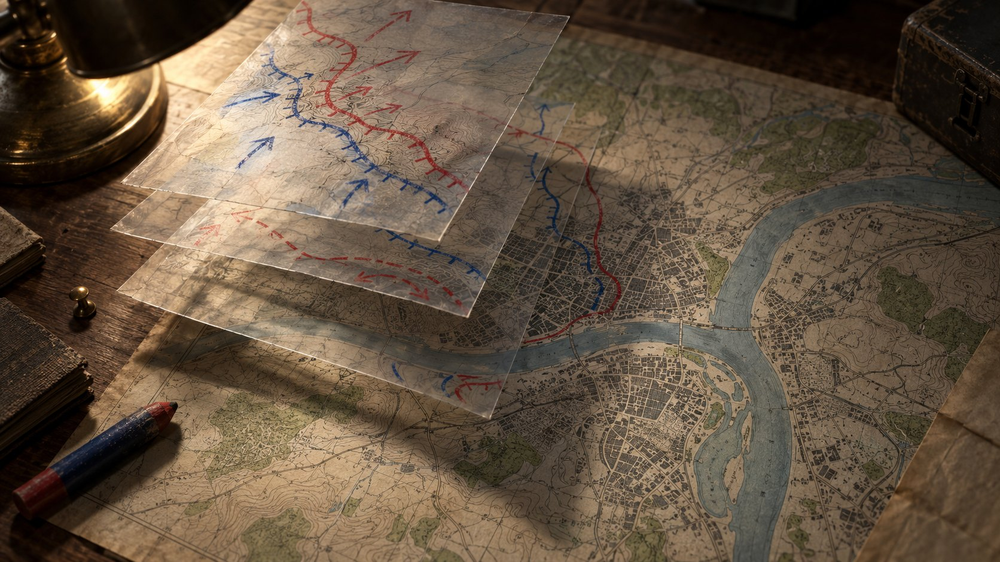
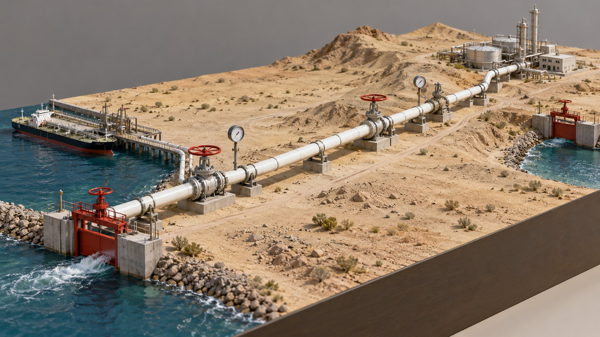
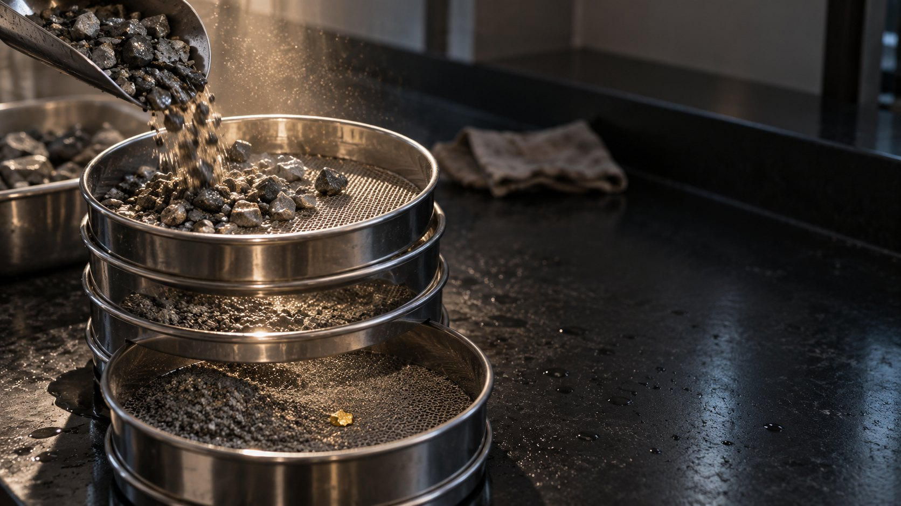
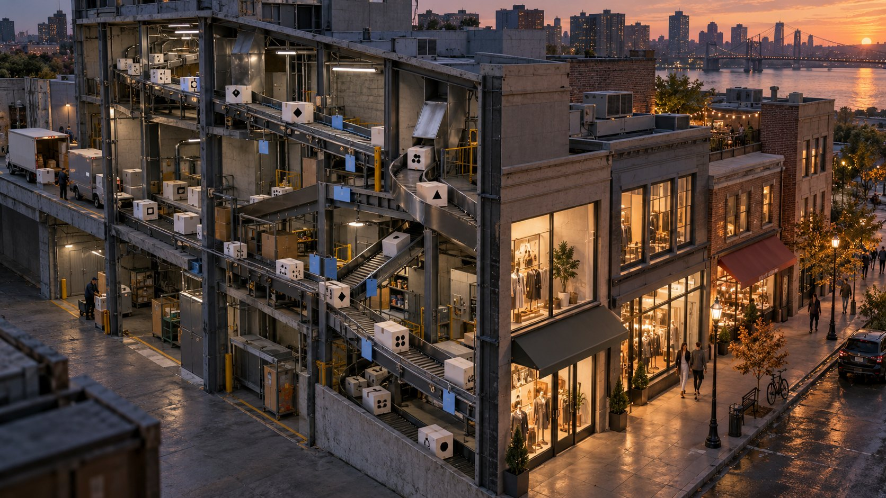
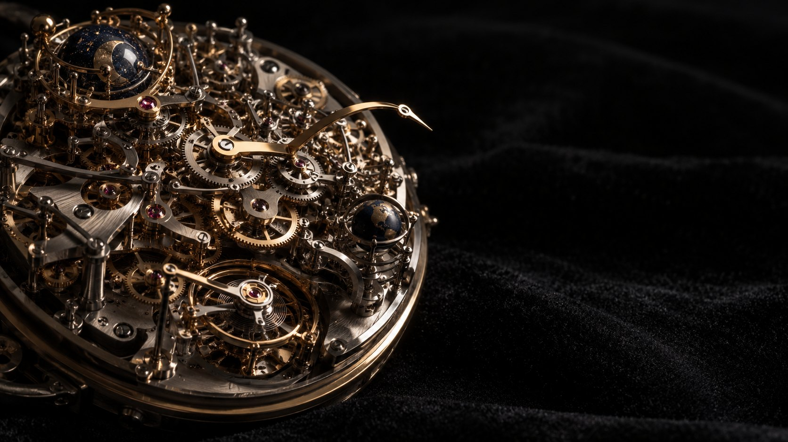
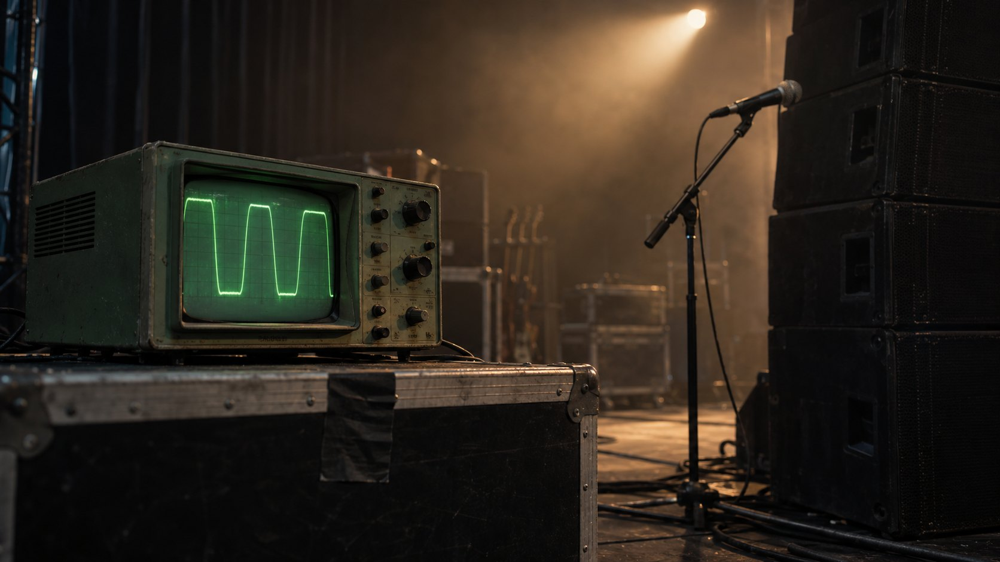

Seven decks

Russia has a free hand. In the air.Scenario analysis of Russia's strike campaign on Kyiv and what still constrains it, as of 3 October 2026.11 slides
The bypass is under fire at both ends.Saudi Arabia routed its oil around Hormuz through a 1,200 km pipe to the Red Sea. In 2026 both the strait and the detour came under attack.11 slides- Two gates. One river.Pakistan and India, sixteen months after the four-day war: each side's account, what is verified, and what the Indus treaty does.11 slides

The right questionMost hard problems are hard because the question is too wide. Change the mesh and the pour changes what it keeps.10 slides
The internet is getting a second user.Your company's agent will talk to their company's agent. A deck about the space between us becoming something AI runs.10 slides
Everything is possible. That is the problem.When building is nearly free, the danger is carrying too much. A watch movement shows what every extra part costs.10 slides
Posting about it can kill the sale.Five experiments on why sharing a product you love can make you less likely to buy it.13 slides